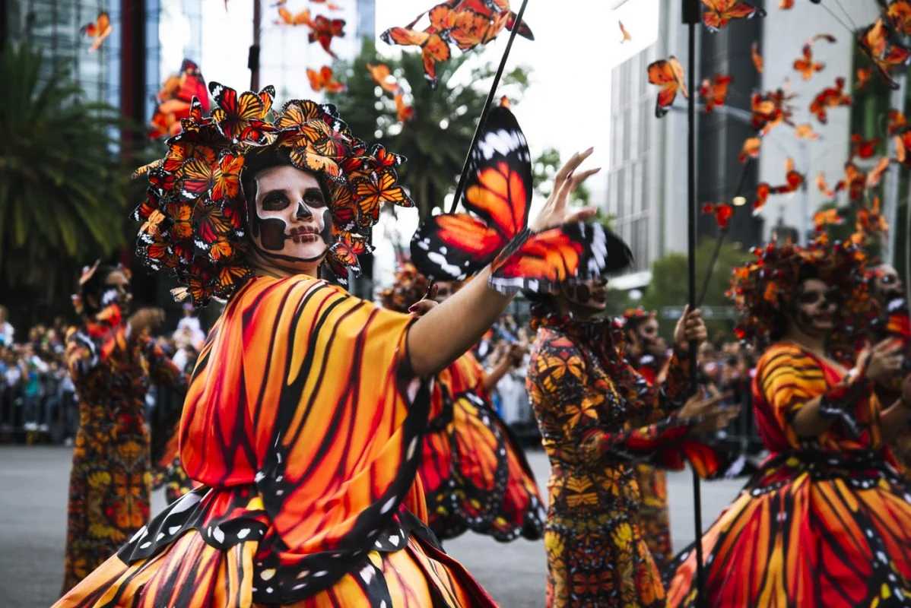
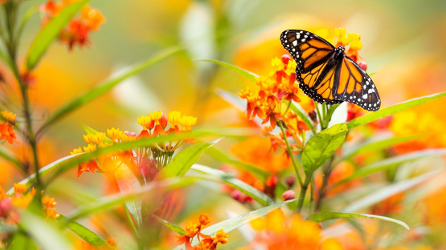
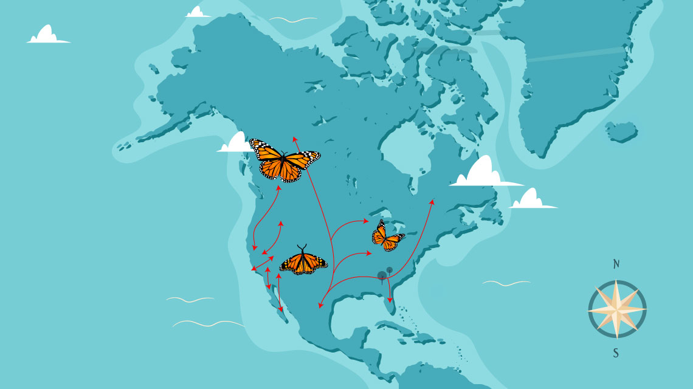
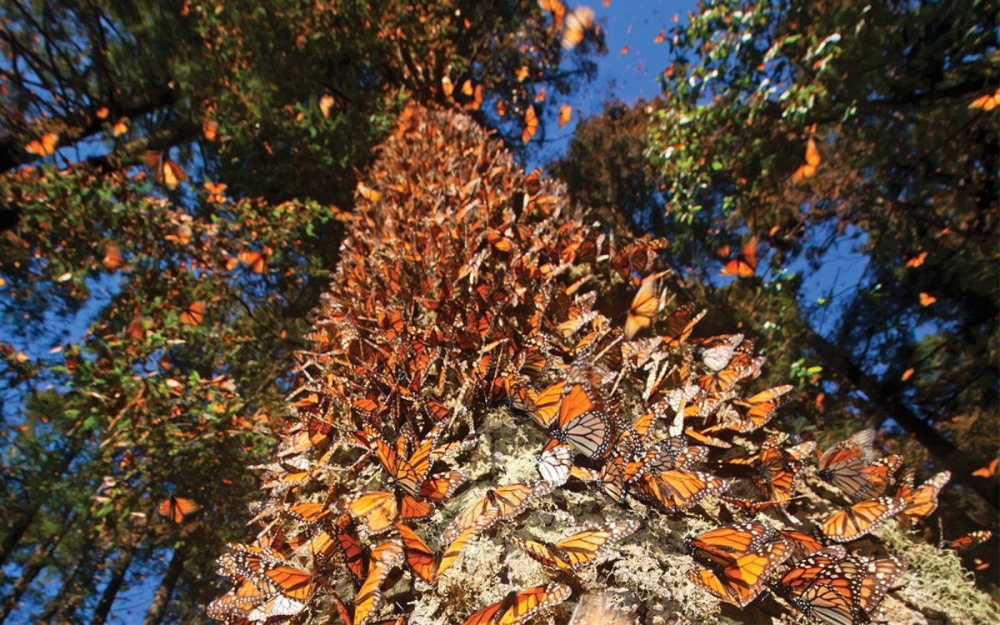
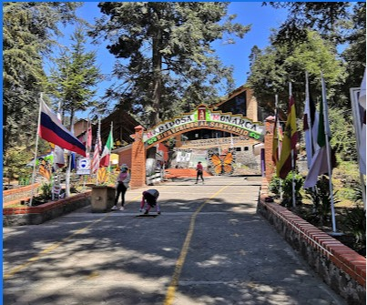
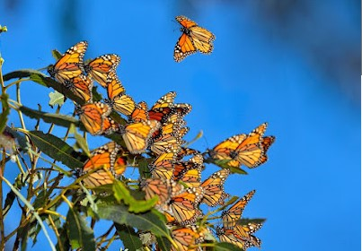
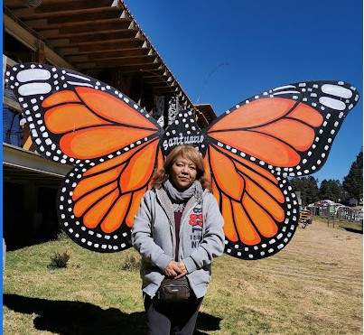

Las mariposas y los muertos
Según las creencias de la cultura prehispánica las mariposas monarca son el espíritu del bosque y el alma de los muertos. Las mariposas monarca anuncian el arribo de las almas de los muertos al mundo de los vivos. Mexicas, mixtecas, teotihuacanos, toltecas y zapotecas rendían admiración con el paso de las colonias de insectos a su zona de hibernación. Los aztecas la llamaban Quetzalpapalotl o mariposa sagrada y la asociaban con Xochiquetzal (flor preciosa), diosa de la belleza, el amor y las flores. Los purépechas la llamaron Kolombrini parakata y los otomí tümü. Según la leyenda, los muertos viajan en las alas de las mariposas y es así como llegan hasta los altares de sus familiares.

Rutas de las mariposas
La migración anual de la mariposa monarca oriental es una de las más impresionantes que existen. El patrón migratorio de las mariposas monarca es el más evolucionado de todas las especies conocidas de su tipo: vuelan hasta 2,500 millas (más de 4,000 km) desde Estados Unidos y Canadá, donde se reproducen, hasta los bosques del centro de México, donde hibernan.
Cada año durante los últimos 17 años, WWF-México, en coordinación con las comunidades locales y sus socios de conservación, hace un análisis de la población de la monarca en la Reserva de la Biosfera de la Mariposa Monarca en el centro de México. Dado que resulta imposible contar una por una a cada mariposa para determinar la población, el equipo mide la cantidad de área de bosque que está ocupada por la monarca, generando un indicador científicamente sólido del estado de su población. Cuanto más bosque ocupado, más saludable es la población de las mariposas monarca. Pero a medida que ese número continúa disminuyendo año tras año, esto se ha convertido en una situación preocupante.

Santuario
La Reserva de la Biosfera de la Mariposa Monarca está localizada en la parte este del estado de Michoacán y parte del oeste del Estado de México en la zona central. La reserva fue creada para proteger el entorno natural y hábitat de la mariposa monarca teniendo una superficie total de 57.259 hectáreas según la Unesco.1 Debido a que los bosques de oyamel (Abies religiosa, un abeto nativo de las montañas centrales y del sur de México) son los únicos tipos de ecosistemas que pueden albergar a las mariposas monarcas (Danaus plexippus) después de sus migraciones anuales desde Estados Unidos y Canadá.2Fue declarada Patrimonio de la Humanidad por la Unesco en 2008.3 En el invierno del 2007 y 2009, había doce importantes colonias o santuarios de las mariposas monarcas que revoloteaban cubriendo un total de 4.75 hectáreas en México, igual que el invierno anterior y cinco más que las existentes en el invierno del 2004 y 2005.
Precios
Guía - $50 por persona
Recorrido - $90 por persona
Sanitarios - $5 por persona
Fotografías - $90

Consejos
Para asistir a este recorrido se les aconseja, el llebar ropa abrigada, y calzado comodo para caminar grandes recorridos, se permite el traer una camara propia, pero evite utilizar el flash para no molestar a las mariposas, además, evite tomar muchos liquidos, ya que solo existe acceso a los sanitarios al principio y a mitad del recorrido
Se les informa de antemano que no deben de tocar ni una sola de las mariposas ni posarse cerca de ellas para no perturbarlas



